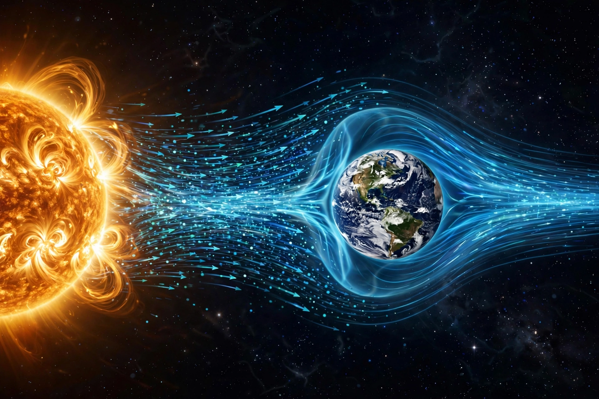

From Wikipedia, the free encyclopedia
| Solar wind | |
 The solar wind distorts Earth's magnetosphere into a comet-like shape | |
| Composition | Mainly electrons, protons and alpha particles (ionised hydrogen and helium) |
| Speed at Earth | ~300–800 km/s (average ≈ 400 km/s) |
| Temperature | ~105 K (protons, near Earth) |
| Density at Earth | ~5 particles per cm³ |
| Predicted | Eugene Parker, 1958 |
| Confirmed | Mariner 2, 1962 |
The solar wind is a stream of charged particles released from the upper atmosphere of the Sun, called the corona. This plasma mostly consists of electrons, protons and alpha particles with kinetic energies between 0.5 and 10 keV. The composition of the solar wind plasma also includes traces of heavy ions and atomic nuclei present in the solar corona, such as carbon, nitrogen, oxygen, neon and magnesium. Superposed with the solar wind plasma is the interplanetary magnetic field, carried outward from the Sun as the solar rotation winds it into a spiral (the Parker spiral).
The solar wind varies in density, temperature and speed over time and over solar latitude and longitude. Its particles escape the Sun's gravity because of the high energy of the corona and the still-incompletely understood mechanisms that supply additional energy. At a distance of more than a few solar radii from the Sun, the solar wind reaches speeds of 250–750 km/s and is supersonic. The flow eventually slows at the termination shock and forms the heliosphere, a vast bubble in the interstellar medium surrounding the Solar System.
Observations that comet tails always point away from the Sun led astronomers such as Ludwig Biermann (1951) to propose a continuous stream of particles from the Sun. In 1958 Eugene Parker combined this idea with a hydrodynamic model of the corona, predicting a supersonic outflow which he named the "solar wind". The prediction was confirmed in 1962 by NASA's Mariner 2 probe en route to Venus. Later missions — including Ulysses, which flew over the Sun's poles, the ACE and DSCOVR monitors at the L1 point, Parker Solar Probe, and ESA's Solar Orbiter — have mapped the wind's structure in three dimensions and close to the Sun.
Two regimes are distinguished: the slow solar wind (about 400 km/s, roughly coronal composition, originating near the Sun's equatorial streamer belt) and the fast solar wind (about 750 km/s, emerging from coronal holes and resembling the composition of the photosphere). Streams of fast and slow wind interact as they rotate, producing co-rotating interaction regions that can drive recurrent geomagnetic activity. Embedded transients called coronal mass ejections expel billions of tonnes of plasma and are responsible for the most severe space weather.
Where the solar wind meets a planet with an intrinsic magnetic field, it is deflected around the magnetosphere, compressing it on the sunward side and stretching it into a long tail on the night side. Reconnection between the interplanetary and terrestrial magnetic fields funnels particles into the polar atmosphere, producing aurorae and, during geomagnetic storms, heating the upper atmosphere, disrupting radio communications and navigation, and inducing currents in power grids. Bodies without substantial magnetic fields, such as the Moon and Mars, are eroded directly by the wind; it is thought to have contributed to the loss of Mars's early atmosphere. The heliosphere inflated by the wind shields the inner Solar System from much of the galactic cosmic radiation.